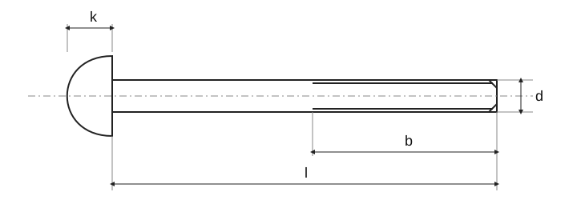

Винты с полукруглой головкой и внутренним шестигранником — A2

Винты с полукруглой головкой и внутренним шестигранником — A2 · Нормативный контекст
| Пункт | Нормативный контекст |
|---|---|
| ISO | Связанный стандарт не является автоматически размерно взаимозаменяемой заменой старого ČSN или DIN. Замена года не обновляет размеры. |
| — | Полный стандарт необходим для проверки размеров, допусков и всех условий. |
Винты с полукруглой головкой и внутренним шестигранником — A2 · Размеры · M3–M12
Исторический источник; числовые значения и исключения не полностью сверены с действующим стандартом.
| d | d₂ [mm] | t [mm] | k [mm] | s [mm] |
|---|---|---|---|---|
| M3 | 5,7 | 1,4 | 1,65 | 2 |
| M4 | 7,6 | 1,4 | 2,2 | 2,5 |
| M5 | 9,5 | 2,2 | 2,75 | 3 |
| M6 | 10,5 | 2,4 | 3,3 | 4 |
| M8 | 14 | 3,2 | 4,4 | 5 |
| M10 | 17,5 | 3,8 | 5,5 | 6 |
| M12 | 21 | 4,7 | 6,6 | 8 |